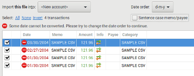
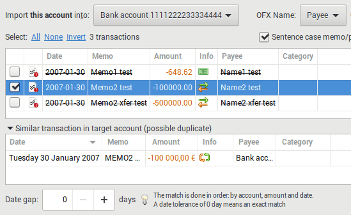

Step 3: Adjust what to import for each account
For each account, you will be able to select what to import with several option, depending on the format.
Import xxxxxx into
where xxxxxx will be this file or this account. If you put the mouse over it, you will get some information on a tooltip: Name, Number, File, Encoding.
Target account
- <New account (global)> : is a global account to merge several file/account
- <New account> : import in a separate account
- ... all your existing account ...
- <Skip this account> : to completely skip the account
Automated account target
Except for .CSV, HomeBank will try to match the account by its number at first, then by its name.
For this to work, of course the number (for OFX) or name (for OFX/QIF) into HomeBank must be a substring
or exact string of what it is into the file to import. For example:
if your account number is 1234 and the number into the file is 1111 666 1234 77 it should match and preset
the target account for you.
If the file do not contains any reliable account information, you will get a  icon right to the target account dropdown.
icon right to the target account dropdown.
Import options
Depending on the format, you will have several option, similar to the one you have configured into the preferences.
Transactions to import
Here you will select the transactions to be imported, with the tick column, or select all, none, invert option.
By default, HomeBank will detect exact duplicate (within the current import), and depending on the target account, the similar transaction into the target account and mark them with a icon.
Similar transaction in target account
This section will be showed for transaction suspected to already exists. You can also change the date gap here. The similar detection refresh when you change the target account or the date gap.
The detection of similar transaction is done in the following order, according to the date gap (default is 0 days = exact).
- same account
- same amount
- same date (with the configured tolerance)